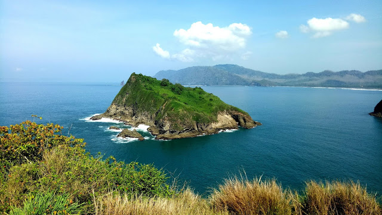

Bukit
Saroyo

Bukit Suroyo merupakan salah satu jajaran bukit yang berlokasi di tepian pantai di Dusun Payangan, Desa Sumberejo, Ambulu, Jember. Menariknya, dari bukit ini kita bisa menikmati beberapa pemandangan sekaligus. Laut, teluk, bukit di tengah laut, dan luasnya laut selatan sejauh mata memandang. Jalan mendaki bukit yang sudah mengalami perbaikan terus menerus semakin mendukung meningkatnya kunjungan wisata di sini.
Saat akan mulai mendaki Bukit Suroyo, mulailah mendaki ke kanan (ke arah barat) sehingga akan mengelilingi bukit dan melihat seluruh pemandangan sekitar bukit. Kenapa harus ke kanan dulu? Karena jalannya tidak terlalu menanjak dibandingkan jika kita naik melalui jalur sebelah kiri terlebih dahulu sehingga meminimalisir rasa lelah.